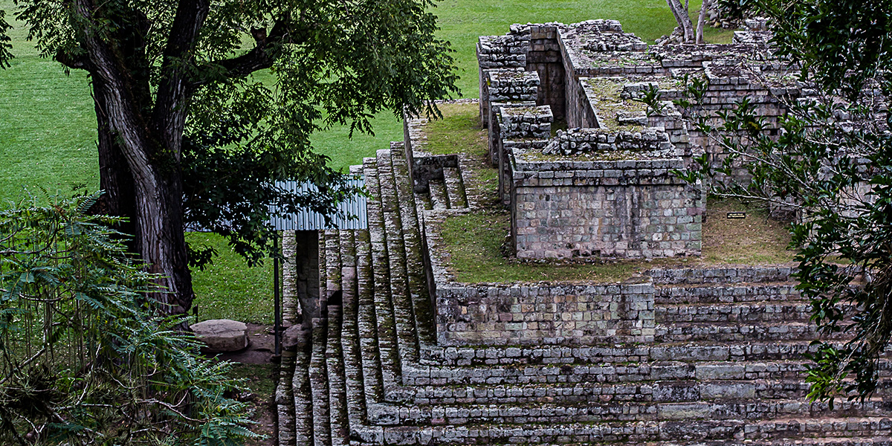
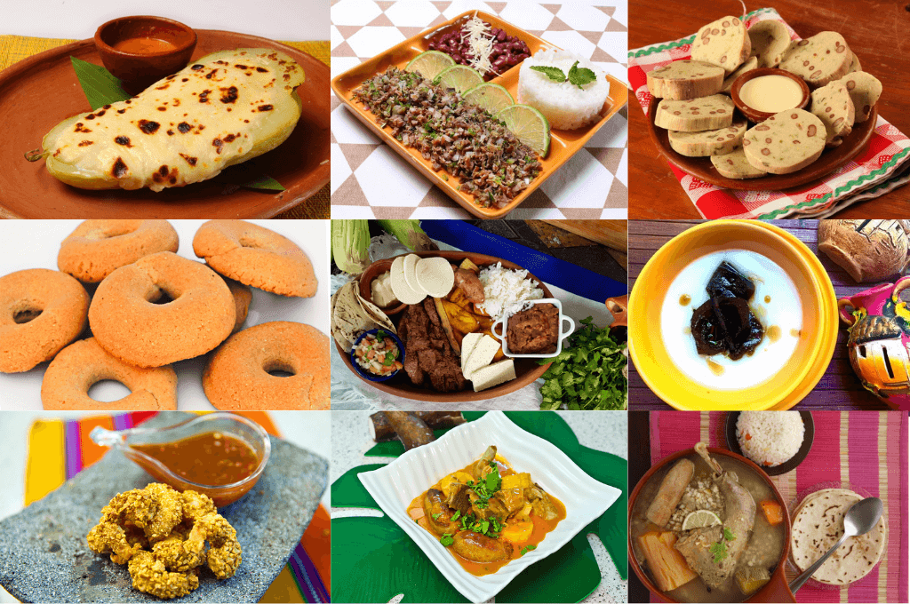

Honduras es mucho más que un destino, es una experiencia. Camina entre las antiguas ruinas mayas de Copán, bucea en los vibrantes arrecifes de Islas de la Bahía, contempla cascadas escondidas en la selva tropical y explora ciudades llenas de cultura y tradición. Aquí, cada amanecer trae una nueva aventura y cada rincón revela una historia por contar. ¡Ven y vive la magia de Honduras!
Aunque muchas veces parece ser uno de los países olvidados por los viajeros en Centroamérica y el mundo, Honduras es una verdadera joya en bruto turístico que merece ser descubierta.
La antigua ciudad maya es una de las más fascinantes de Centroamérica y merece le dediques, al menos, un día completo debido a su gran extensión.

Con 16 kilómetros de largo y 6 de ancho, y rodeado de parques nacionales en el que viven más del 50% de especies de aves de Honduras, el lago ofrece múltiples oportunidades de ecoturismo.
La Ceiba es el punto de partida para visitar algunos de los preciosos lugares turísticos de Honduras como Roatán o Cayo Cochinos, pero también es una ciudad genial para pasar un par de días disfrutando de ella y sus alrededores.

Roatán es la mayor de las llamadas Islas de la Bahía de Honduras. Situada en pleno Caribe, no será ninguna sorpresa que te contemos que en ella podrás encontrar algunas de las mejores playas que visitar en Honduras.
La cocina hondureña es un reflejo vivo de la diversidad geográfica y étnica del país. Desde las montañas hasta las costas, y desde las ciudades hasta las áreas rurales, cada rincón de Honduras contribuye con sabores y técnicas únicas. La mezcla de influencias indígenas, africanas y europeas se manifiesta en cada plato, creando una paleta de sabores y aromas auténticos.
